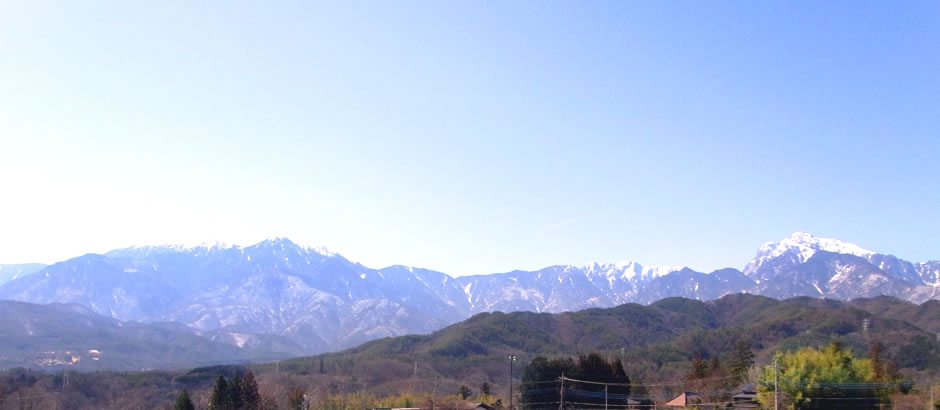
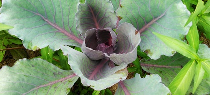

※「固定種」とは…何世代にもわたり種を繰り返しとり続けてきたものです。
【詳しくはこちら】
今年に限り、農薬・化学肥料不使用で栽培する畑があります。
今年に限り、玉ねぎだけは固定種ではありません。

私たちが作っています。
2013年の春、私たち家族は山梨県北社市へ引っ越してきました。
おいしい野菜を作りたい、自然とのかかわりを大切にしたいという気持ちから、
農業を、そして自然栽培に
取り組み始めました。

自然栽培って？
私たちが取り組む「自然栽培」は、簡単に言うと、
農薬や肥料肥料など外部のものに頼らず、
その畑にある自然のサイクルを利用して作物を育てる農法です。